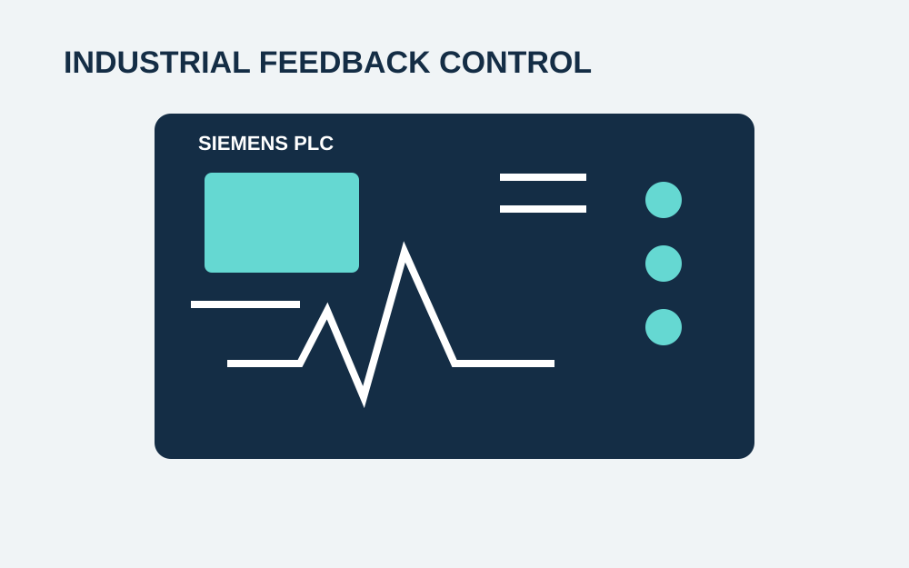
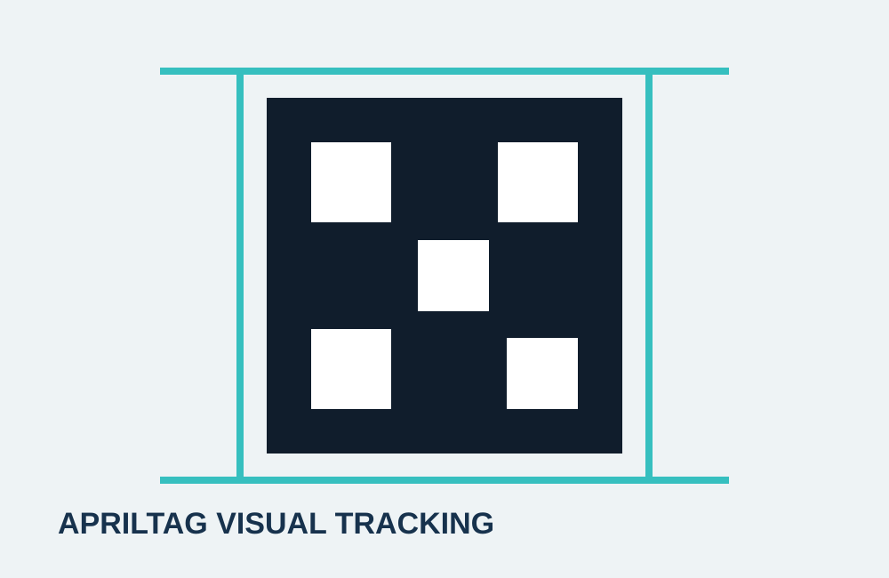

3D Motion Control of Microrobots
Developing a coil-driven magnetic microrobot platform for dental applications, magnetic actuation, robotic control and visual feedback.
Explore more: 3D Motion Control of MicrorobotsMechanical Engineering · Microrobotics · Control
Welcome to my website!
I am Guanlin Qu, an M.S.E. student in Mechanical Engineering and Applied Mechanics at the University of Pennsylvania. My work connects microrobotics, feedback control, vision, and biomedical engineering.
Research experience
Selected projects, ordered from newest to oldest by start date. Explore each project for its background, my contributions, and visual documentation.
Developing a coil-driven magnetic microrobot platform for dental applications, magnetic actuation, robotic control and visual feedback.
Explore more: 3D Motion Control of Microrobots
Designed an IMU-based feedback system for a pneumatic simulator chair, integrating PID control, current-control electronics, and custom fixtures.
Explore more: Flight Simulator Chair
Co-designed a portable rehabilitation device and game interface to help stroke patients practice guided thumb movement.
Explore more: Thumb Rehabilitation Robot
Developed PLC and Arduino PID control for hydraulic fixtures, connecting pressure feedback with motor and clamping-force regulation.
Explore more: Hydraulic Vibration DampingSelected coursework
These courses span control, robotics, microfabrication, sensing, and applied mathematics.
MEAM 5170
Coursework in optimal control and robotic motion planning, including MPC, trajectory optimization, and operational space control. Applied these methods to simulation-based control problems.
MEAM 5180 · Course project
Designed a transparent, flexible ionogel-based sensor array for electronic skin using PDMS structures and ITO electrodes. Proposed a fabrication process incorporating photolithographic patterning and soft lithography.
ESE 5290 · Course project
Designed a dual-mass MEMS gyroscope with a coupled frame-in-frame structure and capacitive sensing. Proposed an SOI-based fabrication process for the device.
ENM 5100
Studied differential equations, linear algebra, and applied mathematical methods that support the modeling and analysis of engineering systems.
ENGRMAE 106 · February–April 2024
Led the design and manufacture of a pneumatic car, including the steering mechanism, drive system, and pneumatic connections. Developed cylinder switching and sensor-based Arduino steering control.
ENGR 7A/7B · February–July 2022
Led the design, modeling, and fabrication of a quadcopter with color identification and ball-shooting functions. Integrated NAZA and Arduino UNO flight control, tuned system parameters, and carried out flight tests.
Photo & video gallery
This gallery is ready for lab photographs, simulation recordings, and experiment videos. Replace the placeholder assets without changing the layout.



Education
M.S.E. in Mechanical Engineering and Applied Mechanics · GPA 3.88/4.0
B.S. in Mechanical Engineering · GPA 3.95/4.0
B.Eng. in Mechanical Design, Manufacturing and Automation · GPA 88.7/100
Let’s connect